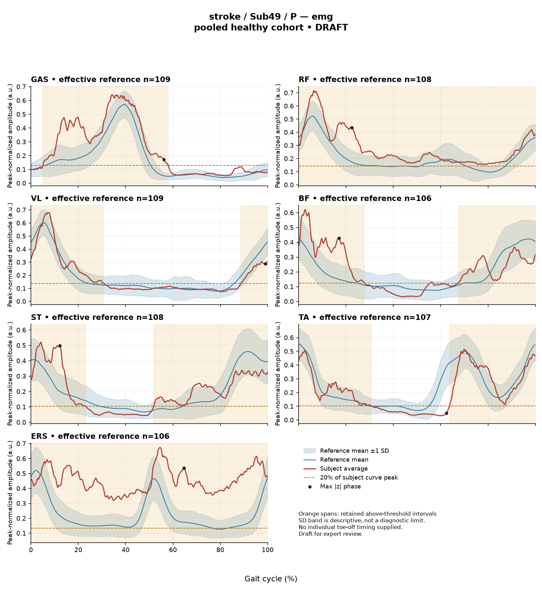

RED639269025AA70C
rater1 / 108 of 150 / Case stroke_Sub49_P / Review row 109
Report: verbatim text
Text file for exact quotations# Gait Report Interpretation — Sub49_P **Interpretation version:** limited-evidence-v3.1-candidate **Scope:** Research-level descriptive interpretation of the supplied quantitative summary only. This is not a diagnosis, not a severity grading, and not a basis for treatment selection. --- ## 1. Objective Findings **Participant and side.** Sub49_P is a member of the **stroke** cohort; the analyzed limb is the **paretic** side. The released cycle for this limb runs from initial contact of the paretic limb (0%) to the next initial contact of the same limb (100%); these are two successive occurrences of the same event, not one instant. No intermediate gait event (including individual toe-off) and no phase boundary are supplied in this task, so all timing below is expressed strictly as a percentage of the analysis cycle. **Spatiotemporal values as supplied.** - Gait speed **0.79 m/s**, labelled "limited community ambulator (0.4–0.8 m/s)." This label denotes a speed band only; it does not measure walking independence, safety, assistive-device use, or real-world community mobility. - Cadence **97.8 steps/min**. - Step length symmetry index **−6.6%**, computed with the **successive-footfall** definition (each heel at its own initial contact). The negative sign indicates the **paretic step is shorter** than the non-paretic step by this index. The alternative instantaneous definition can yield a different value for some subjects; only the successive-footfall value is supplied here. **Reference comparability — important limitation.** Deviation scores for this subject were computed against **138 pooled healthy subjects** (1001 phase points, source: main_cohort_excel), pooling both body sides and all ages; the reference is neither age- nor speed-matched, and this is not a leave-one-out run. The healthy cohort's self-selected speeds span 0.80–1.79 m/s, and this subject's 0.79 m/s falls **below that floor**, so **no speed-matched healthy reference exists in this dataset** for him. Any difference from the reference therefore conflates slow-walking effects with stroke-related control changes; the two cannot be separated from these data, and no comparison below establishes a disease effect, a clinical diagnosis, or a mechanism. **What is not available in this task.** Individual toe-off and other gait events, muscle-specific matched normal timing references, stride-to-stride variability, raw-signal quality checks, expert plots, non-paretic-side comparison data, age, sex, time post-stroke, and stroke clinical scores are **not supplied in this input**. Some of these fields may exist in the wider release; their absence here must not be described as absence from the source dataset. Separately, the EMG array audit documents that 86 of 700 subject–muscle combinations lacked valid nonzero paired samples (614 evaluable) — this is a documented dataset-level property, not a statement about this subject's channels, all seven of which are reported below. --- ## 2. EMG Envelope and Threshold Findings **How these numbers must be read.** All values come from **ensemble-averaged envelopes**. For each participant, side, and muscle, normalization used a shared maximum across available strides before averaging (participant-, side-, and muscle-specific denominator; not shared between sides), with no further amplitude normalization in this pipeline. Amplitudes are therefore **relative envelope values** — not neural activation, force, or strength — and muscles must not be ranked as stronger or weaker from them. An averaged curve cannot show stride-to-stride variability, so none of the intervals below may be assumed to occur identically in every stride. "Above-threshold interval" means the region where the **averaged envelope** exceeds **20% of that same curve's own peak**, with a minimum retained interval of 3% of the cycle. These are properties of the averaged envelope under that rule — not physiological onset, offset, contraction duration, or inactivity outside the intervals. An interval written X%–Y% with X > Y wraps the 100%→0% boundary, i.e. the mean envelope remains above threshold continuously across the cycle-defining initial-contact boundary. An onset written as 0% is the analysis-window edge, not a physiological onset. | Muscle | Above-threshold interval(s) | Coverage | Peak norm. amp. | Max \|z\| vs reference | |---|---|---|---|---| | GAS | 5%–58% | 53% | 0.64 | 4.5, above reference, at 56% | | RF | 0%–100% | 100% | 0.72 | 2.9, above reference, at 22% | | VL | 89%–31% (wraps boundary) | 42% | 0.68 | 1.5, below reference, at 99% | | BF | 68%–28% (wraps boundary) | 62% | 0.62 | 2.7, above reference, at 17% | | ST | 52%–23% (wraps boundary) | 71% | 0.52 | 2.7, above reference, at 12% | | TA | 64%–31% (wraps boundary) | 67% | 0.51 | 2.3, below reference, at 62% | | ERS | 0%–100% | 100% | 0.67 | 4.7, above reference, at 65% | **Boundary continuity.** Five channels (VL, BF, ST, TA, and — by their full-cycle report — RF and ERS) show mean-envelope continuity across the initial-contact boundary. GAS is the one channel with a single non-wrapping retained interval, beginning shortly after the 0% boundary (5%) and ending at 58%. Naming numerical proximity to that boundary is permitted; assigning any percentage to stance, swing, loading response, pre-swing or push-off is not, because no toe-off or phase boundary is supplied. Correspondingly, no interval here can be called normal, early, delayed or prolonged, and none can be mapped to a functional role such as clearance or weight acceptance. Anatomical actions may still be named descriptively (e.g. GAS as an ankle plantarflexor, TA as a dorsiflexor, VL/RF as knee extensors, BF/ST as hamstrings, ERS as an erector spinae channel). **RF and ERS coverage.** Both are reported at 100% coverage with an interval spanning 0%–100%. At the displayed precision this indicates the averaged envelope was above the 20%-of-own-peak threshold throughout the reported cycle; because the value is rounded, this summary does not by itself exclude a brief sub-threshold segment below the reporting resolution. Note also that a 20%-of-own-peak criterion rescales to each curve's own maximum, so high coverage reflects a comparatively flat averaged envelope relative to its own peak rather than any absolute level of activity. **Max |z| values.** The max |z| is an **extreme-value statistic** — the largest standardized difference across all 1001 phase points against the phase-specific reference mean/SD — not a single-observation z-score, and its location is the point of largest standardized difference, **not** necessarily the peak of the envelope and not a gait event. The conventional 2-SD rule does not apply: in this dataset every one of 109 healthy controls exceeds |z| = 2 on at least one muscle. "Above/below reference" denotes position relative to the phase-specific reference mean at that location only. Supplied per-muscle healthy 95th percentiles for this statistic are given for **ERS (3.65)** and **TA (4.61)** only, with the across-muscle range 3.65–4.61. Against those: - **ERS 4.7** exceeds the supplied ERS 95th percentile (3.65). - **TA 2.3** is below the supplied TA 95th percentile (4.61). - For **GAS (4.5)**, RF, VL, BF and ST, no muscle-specific percentile is supplied here, so these values cannot be classified. These percentiles are **pooled calibration values**, not matched leave-one-out normal limits (which run higher still); exceeding one does not establish abnormality, pathology, or a stroke-specific effect, particularly given the absent speed match described in Section 1. **Co-contraction indices.** CCI here is the Falconer–Winter index computed over the **full continuous envelopes** across the whole cycle (2 × common area / summed areas). It is a whole-cycle overlap index of normalized envelopes — **not** simultaneous activation time, not muscular force, not a phase-specific result — and it can be non-zero even when detected burst intervals do not overlap, because sub-threshold activity contributes. Values depend on the normalization and envelope method used and must not be compared with thresholds from other studies or algorithms. - **TA vs GAS = 0.43**, within the supplied healthy interval 0.24–0.59 and slightly above the supplied median of 0.39. - **RF vs BF = 0.77**, within the supplied interval 0.48–0.83 and above the supplied median of 0.68, lying in the upper part of that interval, nearer the 97.5th-percentile endpoint than the median. Falling inside these intervals does not establish physiologically normal co-activation or normal muscle function, and falling outside would not establish pathological co-activation, stiffness, impaired motor control, or any diagnosis. --- ## 3. Kinematic and Reference Comparisons All joint values are **sagittal plane only**; no coronal or transverse data are included, so nothing here speaks to frontal- or transverse-plane mechanics. | Channel (sagittal) | ROM | Gait Variable Score | |---|---|---| | Ankle | 28.3° | 4.68 | | Knee | 56.4° | 8.78 | | Hip | 45.3° | 3.77 | | Pelvis | 3.1° | 0.73 | **Composite (GPS-like) = 5.33**, the RMS of the per-joint GVS values across the supplied sagittal channels. This is **not** the validated 9-variable GPS. Against the supplied composite reference (median 5.1, 95th percentile 10.7), 5.33 is marginally above the median and well below the 95th percentile. **Interpretive limits.** GVS and the composite are summary magnitudes of difference from the stated pooled reference waveforms. Neither localizes the deviation to a direction (e.g. more flexion vs more extension), to a phase of the cycle, or to a mechanism. Within this set, the **knee** channel carries the largest GVS (8.78) and the **pelvis** the smallest (0.73) — a statement about magnitude of difference from the reference mean curve, nothing more. Reported ROM values are descriptive; ROM alone does not establish a clinical restriction or excess without an appropriate matched comparison, and the sagittal pelvic ROM of 3.1° is reported here without a supplied pelvis-specific normal range. As in Section 1, the reference is pooled across sides and ages and contains no walker at or below this subject's 0.79 m/s, so these differences cannot be attributed to stroke pathology as opposed to slow-walking effects, and they do not by themselves establish disease or a clinical diagnosis. The same limits would apply if this reference were used for a control participant. --- ## 4. Questions for Further Clinical Assessment These are open questions raised by the limits of the supplied data. None presupposes that the mechanism or measurement issue in question has been observed, and none implies a treatment. 1. Are individual gait events (toe-off, opposite initial contact) available in the wider release for this subject? Without them, no envelope interval can be placed in a stance/swing or sub-phase framework. 2. Can a speed-comparable or age-comparable reference subgroup, or a leave-one-out reference run, be constructed for a walker at 0.79 m/s — or is the conflation of slow-walking effects with stroke-related changes irreducible for this subject? 3. Are the corresponding non-paretic-side envelopes and kinematics available? Note that the EMG denominator is side-specific, so cross-side amplitude comparisons would require explicit handling of that normalization. 4. Are stride-level (non-averaged) EMG data and raw-signal quality records retrievable, so that the averaged-envelope patterns — particularly the full-cycle above-threshold reports for RF and ERS — can be examined for stride consistency and for artefact, crosstalk, baseline offset or electrode issues that a mean curve cannot reveal? 5. Are per-muscle healthy 95th-percentile values for the max |z| statistic available for GAS, RF, VL, BF and ST, so that those extreme-value statistics can be placed against muscle-specific calibration rather than left unclassified? 6. Would recomputing the step length symmetry index under the instantaneous definition change the −6.6% value materially for this subject, and which definition is preferred for the intended comparison? 7. Does clinical examination identify anything that would inform interpretation of the knee-channel deviation magnitude and the low sagittal pelvic ROM — and are the corresponding out-of-plane kinematics obtainable, given that only sagittal data are provided here? 8. Are contextual fields applicable to the stroke cohort (time post-stroke, clinical scores, assistive-device or orthosis use during capture) available in the release to accompany the speed-band label, which itself reflects speed only?
Coverage rows
| Excel row | ID | Required content | Components |
|---|---|---|---|
| 620 | R145 | Describe walking speed 0.79 m/s and that it is below the stated 0.80 m/s reference floor; no reference at this speed is supplied. | AND: displayed speed and that it lies below the 0.80 m/s reference floor, so no speed-supported healthy reference exists in this dataset. Optional: cadence, speed-band label (not a functional claim). One sentence may also serve the comparability half of G03. At 0.79 m/s the value is 0.01 below the floor; it must not be treated as inside the range. |
| 621 | R146 | Identify the knee as the principal sagittal GVS difference. Ankle and hip descriptions are optional. Exact GVS values are optional; identify the findings as reference-relative sagittal summary differences. | Required: knee as the principal difference. Optional: ankle, hip, pelvis. Exact values optional; no normality claim. |
| 622 | R147 | Describe EITHER ERS envelope above its phase-specific reference mean at approximately 65% of the analysis cycle (displayed max |z| 4.7) OR GAS envelope above its phase-specific reference mean at approximately 56% of the analysis cycle (displayed max |z| 4.5). One complete muscle-specific route is sufficient. Within each route, muscle identity AND mean-relative direction AND approximate cycle location are required. Exact max-|z| repetition is optional. | OR: one complete route suffices. Required for each route: muscle identity AND direction relative to the phase-specific reference mean AND approximate cycle location. Optional: exact max |z| value, comparison with the supplied endpoint span (descriptive only). Prohibited: percentile classification, gait phase, physiological onset, severity. |
| 623 | R150 | Describe the supplied successive-footfall step-length index -6.6% and its meaning: the paretic step is shorter. | AND: displayed index and the direction supported by its sign. Optional: formula, definition wording. Acceptable phrasing for small displayed values: "a small difference with the paretic step slightly shorter/longer" (not a cutoff). Prohibited: restating the index as a percentage shortening (E01), severity grades, whole-gait symmetry generalization (E07 issue, not an omission). |
| 624 | G03 | Express a meaningful limitation of reference comparability AND why the comparison cannot establish disease effects or clinical diagnosis; for controls it cannot establish disease or overall normality. One statement may also support a case requirement. | AND: comparability and inference limitations |
Exact system input
Saved fileDraft a research gait-report interpretation for a physical therapist or physiatrist using only the supplied quantitative summary. This is a limited-evidence interpretation task, not diagnosis or treatment selection. Rules: - Describe the participant's actual group and side, available findings, and missing channels accurately. Healthy-group membership does not prove normal physiology; deviations from an empirical reference do not by themselves establish disease. - Treat detected EMG intervals and coverage as properties of an averaged envelope under the stated threshold and duration rule. Do not convert them into physiological onset, offset, duration, continuous contraction, or inactivity outside the intervals. You may describe reported coverage, retained intervals and boundary continuity at the mean-envelope level. Do not infer the same pattern in every individual stride. Say no below-threshold segment only when the supplied evidence establishes that; a rounded coverage value or no retained interval alone does not establish it. - Individual toe-off and matched muscle-specific timing references are not supplied in this task. Use percentages of the analysis cycle. When the input explicitly identifies an initial-contact boundary, you may name that boundary or describe numerical proximity to it. Do not assign stance/swing, loading response, pre-swing, mid-stance or another event to a percentage, or substitute a conventional 60% split. Anatomical muscle actions may be named, but do not map an interval to a gait-phase function such as clearance, push-off or weight acceptance. Do not characterize timing as normal, early, delayed or prolonged without the required evidence. - Respect the supplied normalization method. Relative envelope amplitude is not strength or force, and average curves do not establish stride-to-stride variability. - Report CCI as a whole-cycle overlap index of normalized EMG envelopes. You may compare it with the supplied empirical interval or a supplied median, including proximity to an endpoint. Do not invent an unavailable median. Being within that interval does not establish physiologically normal co-activation or normal muscle function; being outside it does not establish pathological co-activation, stiffness, impaired control or a diagnosis. CCI is not simultaneous activation time, muscular force or a phase-specific result. It depends on normalization and envelope methods; do not transfer values or thresholds from other studies or algorithms. - Describe GVS and GPS-like as summary differences from the stated reference. Neither localizes waveform direction or phase; ROM alone does not establish a clinical restriction without an appropriate comparison. Do not treat pooled calibration percentiles as matched leave-one-out normal limits. - Where using a reference comparison, convey both limited comparability and the inability to establish a disease effect or clinical diagnosis from that comparison. One clear explanation per report is enough; age and speed need not be recited as separate checklist words. A speed inside an overall range does not prove that an appropriate matched reference exists. Apply these limits to controls as well. - The location of maximum |z| is the largest standardized difference from the reference, not necessarily the time of peak envelope amplitude or a gait event. Above/below reference in an EMG row means relative to the phase-specific reference mean at that location, not relative to a healthy percentile limit. - Preserve numerical direction and the displayed precision. Do not invent values, clinical severity grades, statistical significance, or unavailable reference values. Descriptive comparisons with supplied values remain allowed. Near-boundary rounded values do not justify classifying hidden unrounded values. - Clinical follow-up questions may ask whether a mechanism or measurement issue exists; do not presuppose it has already been observed. Do not recommend treatment. If EMG is unavailable, section 2 may simply state that envelope timing, amplitude and CCI cannot be assessed. Reference-only plots do not provide patient EMG. Use exactly these four sections: 1. Objective Findings 2. EMG Envelope and Threshold Findings 3. Kinematic and Reference Comparisons 4. Questions for Further Clinical Assessment
Exact case input
Saved fileCandidate interpretation version: limited-evidence-v3.1-candidate
Draft the four-section report using only this subject's supplied evidence.
Metric definitions (read before interpreting any number below):
- All joint angles and ROM values are SAGITTAL PLANE only. Coronal/transverse data are not included.
- The released EMG curves are ensemble-averaged envelopes. For each participant and recorded muscle, normalization uses a shared maximum across the available strides before averaging; individual strides are not independently rescaled to their own peaks. This pipeline uses the released mean curves without further amplitude normalization. In the checked stroke release, the denominator is participant-, side-, and muscle-specific; it is not shared between sides. The local array audit verified 614 evaluable combinations, not all 700; 86 lacked valid nonzero paired samples. Amplitudes are relative envelope values, not absolute neural activation, force, or strength. Do not rank muscles as stronger or weaker from these amplitudes, or infer stride-to-stride variability from an average curve.
- Above-threshold intervals are the regions where the averaged envelope exceeds 20% of that curve's own peak, minimum retained interval 3% of the cycle (by sample count). An interval written as (X%-Y%) with X > Y wraps across the 100%->0% cycle boundary (envelope remains above threshold across the cycle-defining event). An onset of 0% is the analysis-window boundary, not necessarily a physiological onset. "No interval detected" means no region met the threshold + duration criteria; it does NOT mean the muscle is inactive or non-functional.
- CCI is the Falconer-Winter co-contraction index computed on the full continuous envelopes (2*common area / summed areas), so it can be non-zero even when the DETECTED burst intervals of the pair do not overlap (sub-threshold activity contributes).
- The composite kinematic deviation score is the RMS of the per-joint Gait Variable Scores over the sagittal channels provided ("GPS-like", not the validated 9-variable GPS).
- Step length symmetry index: 200*(paretic - non-paretic)/(paretic + non-paretic), in %. NEGATIVE means the paretic-side step is SHORTER. Two operational step-length definitions exist (successive-footfall: each heel's position at its own initial contact; instantaneous: both heels at the same instant) and give different values for some subjects -- the definition actually used is stated next to the symmetry value.
- "Max |z| deviation" is the LARGEST absolute z-score across all 1001 phase points of the cycle, comparing this curve to the healthy-cohort mean/SD at each phase. This is an extreme-value statistic, NOT a single-observation z-score: in this dataset every one of 109 healthy controls exceeds |z| = 2 on at least one muscle, and per-muscle healthy 95th percentiles for this statistic run 3.65 (ERS) to 4.61 (TA) -- higher still under leave-one-out. Do not label a value abnormal by the conventional 2-SD rule; use the healthy reference range given per muscle where provided.
- Healthy-cohort CCI reference (this dataset): RF-vs-BF median 0.68 (2.5th-97.5th pct 0.48-0.83); TA-vs-GAS median 0.39 (0.24-0.59). Composite score reference: median 5.1, 95th percentile 10.7.
- COHORT BACKGROUND (calibration context, not necessarily the exact reference used for this subject -- the actual reference composition is stated in a dedicated line with the subject data below): the full healthy cohort is 138 subjects for kinematics, effective n = 106-109 per muscle for EMG (29 controls have no usable EMG; completeness varies by age), pooling both body sides and all ages; it is not age- or speed-matched to this subject. A leave-one-out run uses one subject fewer than these counts.
- SPEED SUPPORT LIMIT (applies to most stroke subjects in this dataset): the healthy reference cohort's self-selected walking speeds span 0.80-1.79 m/s. If this subject's gait speed is below 0.80 m/s, NO speed-matched healthy reference exists in this dataset -- 41 of the 50 stroke subjects are below that floor. Deviations from the reference then conflate slow-walking effects with stroke-specific control changes, and the two cannot be separated from these data. Describe deviations from the reference as such; do not attribute them wholly to stroke pathology.
- Additional source fields are outside this input. Age, sex and gait events may be available in the release; time post-stroke, stroke clinical scores and a non-paretic-side designation apply only to the stroke cohort, as applicable. Do not claim every listed field exists for every participant. Distinguish not supplied, not applicable and documented absent recordings.
The released paretic-side cycle runs from initial contact of that limb at 0% to its next initial contact at 100%. The cycle boundary may be called initial contact; the endpoints are successive occurrences, not one instant. No intermediate event or phase boundary is supplied.
Model-visible information boundary: the summary contains mean-curve metrics and algorithm-detected intervals, not individual toe-off, matched normal muscle timing, stride-level variability, raw-signal quality checks, or expert plots. Information not supplied here must not be described as absent from the source dataset. Gait-cycle percentages alone do not identify gait phases.
Subject: Sub49_P (group: stroke, affected side: paretic)
Gait speed: 0.79 m/s (limited community ambulator (0.4-0.8 m/s)) [The ambulation label denotes a speed band only, not measured walking independence, safety or real-world community mobility.]
Cadence: 97.8 steps/min
Step length symmetry index: -6.6% (step-length definition: successive_footfall)
Composite kinematic deviation score (GPS-like): 5.33
Deviation reference actually used for this subject: 138 healthy subjects (pooled), 1001 phase points, source: main_cohort_excel.
EMG envelope findings:
- GAS: above-threshold interval(s) 5%-58%, 53% of cycle above threshold, peak normalized amplitude 0.64, max |z| vs healthy reference: 4.5 (above reference, at 56% of cycle)
- RF: above-threshold interval(s) 0%-100%, 100% of cycle above threshold, above threshold across cycle boundary, peak normalized amplitude 0.72, max |z| vs healthy reference: 2.9 (above reference, at 22% of cycle)
- VL: above-threshold interval(s) 89%-31% (wraps cycle boundary), 42% of cycle above threshold, above threshold across cycle boundary, peak normalized amplitude 0.68, max |z| vs healthy reference: 1.5 (below reference, at 99% of cycle)
- BF: above-threshold interval(s) 68%-28% (wraps cycle boundary), 62% of cycle above threshold, above threshold across cycle boundary, peak normalized amplitude 0.62, max |z| vs healthy reference: 2.7 (above reference, at 17% of cycle)
- ST: above-threshold interval(s) 52%-23% (wraps cycle boundary), 71% of cycle above threshold, above threshold across cycle boundary, peak normalized amplitude 0.52, max |z| vs healthy reference: 2.7 (above reference, at 12% of cycle)
- TA: above-threshold interval(s) 64%-31% (wraps cycle boundary), 67% of cycle above threshold, above threshold across cycle boundary, peak normalized amplitude 0.51, max |z| vs healthy reference: 2.3 (below reference, at 62% of cycle)
- ERS: above-threshold interval(s) 0%-100%, 100% of cycle above threshold, above threshold across cycle boundary, peak normalized amplitude 0.67, max |z| vs healthy reference: 4.7 (above reference, at 65% of cycle)
Co-contraction indices:
- TA_vs_GAS: CCI = 0.43
- RF_vs_BF: CCI = 0.77
Joint kinematic findings (sagittal plane):
- AnkleAngles: range of motion 28.3 deg, Gait Variable Score 4.68
- KneeAngles: range of motion 56.4 deg, Gait Variable Score 8.78
- HipAngles: range of motion 45.3 deg, Gait Variable Score 3.77
- PelvisAngles: range of motion 3.1 deg, Gait Variable Score 0.73Reference card
Saved file# Reference context: stroke/Sub49_P Mean/SD reference: 138 controls; method pooled; exclusions: []. Effective reference counts: GAS=109, RF=108, VL=109, BF=106, ST=108, TA=107, ERS=106, AnkleAngles=138, KneeAngles=138, HipAngles=138, PelvisAngles=138. The exact system and user input files define what the model receives. The EMG and kinematic plots are supplementary expert evidence, not model inputs. The plotted mean plus/minus one SD is descriptive, not a clinical normal band. Negative lower EMG bands can result from mean minus SD; they do not imply negative recorded EMG. The max-|z| p95 span in the input is pooled calibration context. Complete muscle-specific LOO thresholds are not supplied; an appropriately indeterminate classification is allowed. Controls are excluded from their own mean/SD reference, but cohort-level calibration has prior reference-data reuse. It is not an independent matched clinical limit. GPS-like is a four-channel sagittal composite, not the validated nine-variable GPS. The pooled median/p95 background is not a matched LOO normality boundary. CCI uses continuous normalized envelopes over the whole analysis cycle. An empirical interval comparison does not establish normal muscle function. Threshold intervals and rounded coverage describe the averaged envelope. Rounded 100% coverage and one interval do not prove absence of short below-threshold gaps. Use the group-specific cycle and normalization provenance in the actual input. No individual intermediate gait events or matched normal muscle timing are supplied. Administrative age and published bilateral speed are not added to this input. Expert-visible plots do not justify requiring unseen direction, phase or morphology. For a new-case requirement, cite exact input evidence. Select clinically useful descriptive content without inferring a diagnosis or severity from rank alone.
Expert reference curves
Only text inputs were supplied to the model. Do not require curve-only findings.
EMG

Kinematics